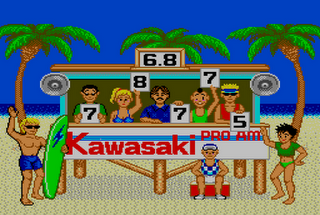

Master System - Jogos de Verão
 :::. Por Matheus T. - Clique aqui para ler o artigo original no QG Master.
:::. Por Matheus T. - Clique aqui para ler o artigo original no QG Master.
Olá pessoal, aqui é o Matheus e hoje eu vou falar de um jogo que realmente ajudou a popularizar o nosso querido Master System aqui no Brasil, e que com certeza marcou a vida de muitos que jogaram este clássico: Jogos De Verão. Nos outros países ele é conhecido como California Games, mas creio que a Tec Toy mudou o título com o objetivo de querer o popularizar no nosso país, o curioso é que ela manteve o nome original na tela inicial do jogo.
Ele foi produzido pela Epyx, bastante conhecida por produzir jogos de esporte nesse estilo (seus jogos eram baseados em esportes competitivos, reunindo várias modalidades em um cartucho só, parecido com o clássico Track & Field da Konami). Anteriormente ela tinha lançado jogos nesse estilo como Summer Games e World Games, mas esse foi sem dúvidas o mais popular entre eles.
O jogo
Como eu expliquei no começo do texto, o jogo realmente se chama California Games e ele traz no total seis modalidades: Half Pipe, Foot Bag, Surf, Skating, BMX e Flying Disk (Frisbee), ou seja, esportes comuns de serem praticados na Califórnia. Todas são muito fáceis e simples de aprender e jogar. O seu objetivo? Marcar muitos pontos e ultrapassar os recordes propostos pelo jogo. Assim que você liga o jogo você encontra as seguintes opções:
Compete in All Events - Como o próprio nome diz, é para competir em todas as modalidades.
Compete in Some Events - Para quem não curte algumas modalidades essa é uma ótima opção pois aqui você escolhe em quais quer competir.
Compete in One Event - Recomendável para aqueles que querem competir em apenas uma modalidade, enfim se você apenas quer superar os recordes naquela modalidade que tanto gosta, essa é a melhor opção.
Practice One Event - Importantíssimo, como o nome diz é para você praticar em alguma modalidade, bom para não pagar aquele mico na hora da competição.
View High Scores - Aqui fica registrado os recordes do jogo, como o cartucho não possui bateria, assim que resetar o console você perde todos os seus recordes.
View Title Screen - Voltar para a tela inicial do jogo.
O mais bacana nesse jogo é que além de você poder jogar sozinho, você tem a opção de jogar com até 8 pessoas no total, o que torna o jogo mais divertido e competitivo ainda. Você também pode colocar o seu nome (o que ajuda na hora da identificação quando jogado no multiplayer) e também a sua equipe patrocinadora, uma coisa bastante incomum para essa época.
Escolha um dos três modos de competição... |
registre o seu nome e... |
 |
|
escolha a equipe patrocinadora que irá representar. |
|
Agora que eu falei um pouco de cada opção do jogo, vou dar agora alguns detalhes de cada modalidade e também algumas dicas para acumular bastante pontos:
Half Pipe
Para mim, uma das modalidades mais legais do jogo. Aqui o seu objetivo é fazer manobras radicais neste imenso half pipe. Para controlar o skatista basta guiá-lo com o direcional, assim ele vai ganhando impulso para chegar no outro lado do Half Pipe. Assim que ele chegar pressione o direcional para o lado oposto para executar o Kick Turn. Mantendo o direcional pressionado por um tempo dará mais pontuação, mas cuidado, se manter pressionado por muito tempo você vai perder o equilíbrio e então cair. Quando chegar bem próximo ao fim da rampa, pressione o botão 2 para executar o Hand Plant, aqui a mesma regra do Kick Turn serve para ele, mantendo pressionado por um tempo voce consegue mais pontuação e se pressionado por muito tempo, é tombo na certa.
Uma boa dica é fazer o Hand Plant (foto), assim você vai acumulando pontos e ao mesmo tempo vai ganhando impulso para chegar ao ar e... |
assim executar o Aerial Turn, a manobra que vale mais pontos nessa modalidade (quanto mais alto chegar, maior a pontuação, lembrando que o maior ponto é 999). |
 |
|
Tempo encerrado!!! |
|
Foot Bag
Essa modalidade é sem dúvida a mais bacana de jogar e também a mais viciante. Ela consiste em marcar pontos fazendo embaixadinhas, o que garante muitas possibilidades de acumular pontos. Para chutar a bolinha pressione o botão 2, quando ela estiver no alto pressione o botão 1 para cabecear a bola (é possível fazer isso com o botão 2, mas com o botão 1 é mais seguro). Lembre-se que dependendo do ângulo e da distância em que a bola estiver você executará outros movimentos no lugar da cabeçada.
Não se esqueça que há um tempo limitado para fazer tudo isso, então procure ser ágil, faça movimento variáveis e de preferência os que valem mais, caso faça a bola ir para fora da tela ela será arremessada novamente, caso consiga executar algum movimento enquanto ela estiver no ar você ganha pontos extras, você também ganha pontos se atingir a gaivota que sempre passa pelo cenário.
 |
 |
Procure fazer vários movimentos como o Jester e... |
o Doda, pois eles são uns dos movimentos que valem mais pontos. |
 |
|
Pobre gaivota, nem ela escapa das habilidades do garoto. |
Assim que o tempo encerrar o jogo vai analisar todos os seus movimentos realizados, dando muitos pontos extras conforme a sua variação de movimentos. |
Surfing
O objetivo aqui é simples, porém um pouco complicado. O seu objetivo é realizar várias manobras enquanto uma grande onda está prestes à te engolir. Assim que começar a surfar, utilize o direcional para os lados para movimentar o surfista, caso queira reduzir a velocidade, mantenha pressionado o botão 2 assim que estiver movendo o surfista para os lados, isso ajudará a ficar abaixo da onda, lhe dando alguns créditos na hora da avaliação final. Procure executar alguns saltos, mas tenha cuidado pois qualquer queda irá reduzir muito as suas notas finais.
Seja corajoso! |
Dê saltos incríveis e... |
 |
|
encare a terrível onda!! |
Essa é uma das modalidades mais difícéis de conseguir uma boa pontuação, esse loirinho mal humorado sempre dá nota mais baixa que os outros. |
Skating
Mostre toda a sua habilidade sobre o patins neste enorme calçadão, mas não pense que será fácil porque haverá muitos obstáculos loucos para ver você estendido no chão.
Para mover a patinadora, pressione o direcional para cima e para baixo, mantendo o direcional pressionado para o lado esquerdo ela dará um giro, te dando alguns pontos. Procure desviar dos objetos que se encontram no chão e quando encontrar alguma rachadura, pule, isso também valerá alguns pontos.
 |
|
Se você saltar girando você consegue mais pontos. |
Acho que vou caaiiiiiiiiirrr!!!! |
BMX
Se você estava em busca de desafios, esse é pra você. Encare uma incrível pista no deserto cheia de rampas e obstáculos e mostre o seu talento sobre uma BMX.
Pressione o botão 2 para ganhar velocidade e o botão 1 para pular. Desvie dos objetos que se encontram pelo chão com o direcional pressionado para cima, para baixo ou pulando. Quando encontrar uma rampa, pressione o botão 1 para ele dar um grande salto. Esse é o melhor momento para acumular muitos pontos, assim que estiver no ar pressione o direcional para alguma direção para ele executar alguma manobra, sendo assim um total de quatro manobras: Tabletop (direcional para cima), Backward Flip (direcional para esquerda), Foward Flip (direcional para direita) e o 360° Turn (direcional para baixo). Dependendo da altura do seu salto a manobra executada poderá valer mais pontos (em algumas situações ela muda até o nome).
Além dessas manobras é possível você inclinar a BMX mantendo o direcional pressionado para o lado esquerdo. Mas é bom ter muito cuidado quando realizar alguma manobra como o Backward Flip e principalmente o Foward Flip, como são manobras muito complexas elas levam um tempinho para serem executadas completamente, caso você caia no meio da manobra você corre o risco de bater a cabeça, fazendo com que a sua partida encerre na hora. Evite também manter a bicicleta muito acelerada porque no fim do estágio há um grande precipício e se cair ali é morte na certa.
 |
 |
Tenha estilo! |
Faça manobras radicais! |
 |
 |
Mas tenha cuidado, é bom manter a velocidade equilibrada, ou... |
você não vai gostar do que vai ver. |
Flying Disk
Prepare-se para o último desafio, tenha um pouco de paciência pois essa modalidade não é tão fácil quanto parece. O seu objetivo é o seguinte: lançar o disco e pegar com a outra personagem que está do outro da tela.
Para lançar o disco, pressione o direcional para o lado esquerdo, fique atento ao indicador, assim que ele estiver marcado na barrinha verde no Speed, pressione o direcional para o lado direito. Assim que pressionar, o indicador automaticamente voltará para o começo da barra, assim que estiver marcado sobre a barra verde no Angle, pressione o botão 2 para a garota lançar o disco. Agora é a hora de controlar a garota que está do outro lado, prepare-se pois agora será um pouco complicado.
 |
Concentre-se e marque o indicador corretamente para ter um lançamento bem sucedido. Preste atenção porque é neste quadro vermelho (aonde a seta indica) que você vai acompanhar a trajetória do disco. |
Procure sempre estar de olho no pequeno quadro (foto acima) que fica no canto superior da tela para ver se o disco está se aproximando, assim que ele estiver bem próximo corra com o direcional para pegar o disco (ela pega automaticamente), mantendo o direcional pressionado para cima ela irá erguer o braço, mas é bom evitar fazer isso porque é mais complicado do que o primeiro método. Agora caso esteja um pouco distante do disco, pressione o botão 2 para saltar em direção dele.
 |
 |
Seja esperto e comece a correr assim que ver o disco se aproximando. |
Boa pegada!!! |
Bonus Game
Uma coisa que ajuda bastante é que, caso você ultrapasse os recordes do jogo, você participa de um minigame que funciona da seguinte maneira: três imagens ficam girando, caso pare as três e elas pararem na mesma imagem você ganha algo novo correspondente à essa imagem. Lembrando que são apenas três imagens diferentes e cada uma corresponde à uma modalidade: parando três fotos correspondetes à modalidade do BMX, você ganhará uma bicicleta nova, ela é mais rápida e também dá saltos mais altos e precisos. Caso pare nas fotos da modalidade do Surfing você ganhará uma prancha nova, ela te garante mais velocidade e também saltos altíssimos. E o último, a foto que representa o Foot Bag, que faz com que você tenha reflexos na hora que a bolinha estiver no ar, lhe dando mais facilidade em executar movimentos mais complexos como o Reverse Doda e o Double Arch. É uma pena não haver equipamentos novos para as outras modalidade como o Skating e o Flying Disk, se houvesse ajudaria muito já que não é tão fácil acumular tantos pontos nessas modalidades.
 |
 |
Tenha muita paciência e... |
com sorte, você será muito bem recompensado!! |
Não consegue acertar as três fotos? Anda azarado que nem eu??? Não se preocupe, aqui você confere as dicas para ganhar no Bonus Game sem erro:
. BMX - Na tela que você registra o nome, digite KOTARO, depois ultrapasse o recorde em qualquer modalidade, assim que entrar na tela de Bonus aparecerá a mensagem "Hello KOTARO!!". Assim que parar as três fotos, automaticamente você ganhará a BMX nova.
. Reflexos no Foot Bag -Na tela que você registra o nome, digite TAKAKO, depois ultrapasse o recorde em qualquer modalidade, entrando na tela de Bonus aparecerá a mesagem "Hello TAKAKO!!". Assim que parar as três fotos, automaticamente você ganhará a habilidade dos reflexos.
. Surfing - Na tela que você registra o nome, digite NORIKO, depois ultrapasse o recorde em qualquer modalidade, assim que entrar na tela de Bonus aparecerá a mensagem "Hello NORIKO!!". Assim que parar as três fotos, automaticamente você ganhará uma prancha de Surf nova.
Situações Curiosas
Em algumas modalidades podem ocorrer situações bem curiosas como o terremoto na modalidade do Half Pipe ou então acertar a gaivota (o coitado tem até nome hahaha) ou então no Surfing, que quando você cai pode aparecer um golfinho, uma gaivota e até mesmo um tubarão, o engraçado é que quando o Tubarão aparece começa a tocar o tema do filme Tubarão. Uma pergunta bastante comum é o que fazer para que ocorra o terremoto? Eu não sei dizer se realmente há uma maneira de fazer com que aconteça isso, pra mim isso é como as outras situações que ocorrem como por exemplo no Surfing, uma hora aparece um tubarão, uma gaivota e tem hora que não aparece simplemente nada, é tudo questão de sorte mesmo.
Agora há outras situações que eu já ouvi falar, mas nunca presenciei. Muitos juram ter pulado a cerca no final da modalidade do Skating, de terem sido atacados por um urso e até serem abduzidos por um UFO no Flying Disk, outros falam que é possível atingir o barco no Foot Bag. Eu não sei se esses que eu citei são realmente reais ou não, devemos lembrar que há versões desse jogo para diferentes consoles e computadores, de repente pode até acontecer neles mas no Master System apenas os que eu citei acima eu presenciei.
Gráficos
Jogos De Verão possui gráficos bons com cenários coloridos e caprichados (destaque para o efeito da onda na modalidade do Surfing), os personagens tem uma movimentação bem bacana, e o melhor de tudo, sem quedas de frames. Mesmo não tendo uma grande variedade nos cenários (apenas um lugar para cada modalidade) eu nunca ví alguém que reclamasse ou enjoasse do jogo.
Som
O jogo possui uma ótima trilha sonora (com até algumas conhecidas como a música de introdução e a que toca na modalidade do Surfing) e te deixa totalmente no clima do jogo. Cada modalidade possui a sua própria música e todas são muito agradáveis de ouvir, o jogo também possui alguns efeitos sonoros nos saltos que você executa nas modalidades do Half Pipe e BMX, de quando você cai na onda no Surfing e até mesmo algumas vozes digitalizadas, quem não se lembra do cara que fala na tela que mostra a modalidade que vai ser competida: Go Trasher! ou então: Hack it!
Outro ponto forte é que esse jogo também tem a função FM, melhorando mais ainda a qualidade sonora do jogo. É uma pena só os modelos do Master System japoneses terem essa função, mas cá entre nós, não existe nada melhor do que ouvir aquele som nostálgico do nosso Master System, ainda mais quando você jogou na época ou no próprio console.
Jogabilidade
Por ser um jogo de esporte a jogabilidade é fundamental e mais importante do que os requisitos citados acima, aqui o nosso simples joystick cumpriu muito bem o seu papel trazendo uma jogabilidade precisa e que responde bem aos nossos comandos, porém ela é um pouco confusa.
Em algumas modalidades você vai se frustrar um pouco com a jogabilidade do jogo como por exemplo no Skating, em que você tem apertar o direcional para cima e para baixo em sequência para movimentar a personagem, dando um pouco de desconforto para o jogador. Há também momentos em que os comandos atrapalham o jogador como por exemplo no Foot Bag (tem horas que ele dá a cabeçada em vez do chute ou então acaba executando um movimento errado). Portanto não espere que bata recordes logo de cara, tenha um pouco de paciência e pratique muito.
Conclusão
Enfim pessoal, Jogos De Verão é realmente um jogo bacana e consegue divertir a qualquer hora, ainda mais quando se joga com os amigos, e mesmo não tendo algum enredo ou algo do tipo (já que se trata de um jogo de esporte), é um jogo muito bacana porque você pode jogar a qualquer momento e sem compromisso, afinal de contas não é todo dia que temos aquele tempo livre para nos dedicarmos à algum jogo longo (como um RPG por exemplo). Portanto jogue, pois eu garanto que você não vai se arrepender, o único problema é que você vai sofrer um pouco pra desgrudar desse jogo pois ele é realmente muito viciante. Enfim um ótimo jogo que não pode faltar na sua coleção.
Acesse o Trombone e comente sobre essa matéria!


Um dos erros mais imperdoáveis da Sega. Em 90/91 mais ou menos, a Sega ganhou da Tecmo a oportunidade de fazer umas versões do Ninja Gaiden para os seus consoles. Essa chance é comparável ao que Deus fez quando deu o mundo para Adão... bem, o final tanto de Adão quanto da Sega nesse caso são semelhantes.
Albert Odyssey é um dos jogos mais amados pelos fãs do Saturn. Com uma história simples mas rica, dramatica e emocionante, encantou muita gente que naquele inicio da era 32 bits, ainda não estava acostumada com trilha sonora feita com instrumentos de verdade e gráficos cheios de luz e efeitos. Mas, não era para ser assim com esse jogo...